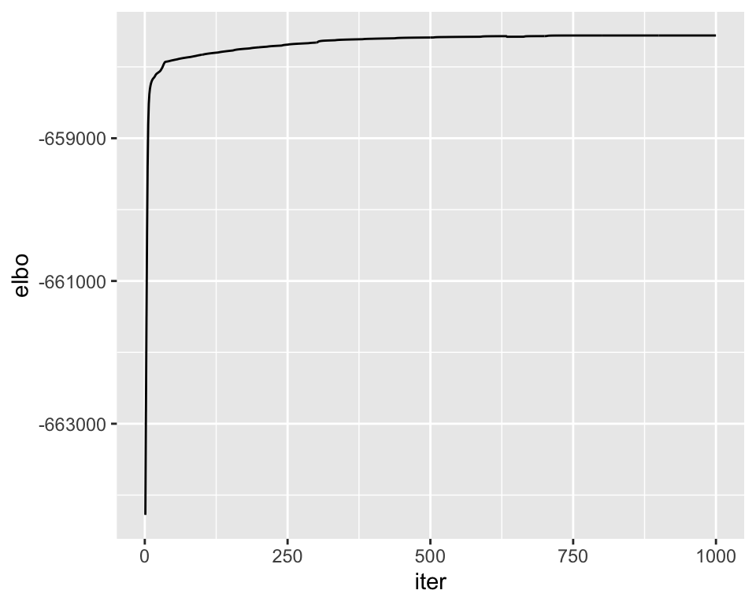

Branching + admixture simulation: large p and longer runs
Jason Willwerscheid
1/10/2020
Last updated: 2020-01-16
Checks: 6 0
Knit directory: drift-workflow/analysis/
This reproducible R Markdown analysis was created with workflowr (version 1.2.0). The Report tab describes the reproducibility checks that were applied when the results were created. The Past versions tab lists the development history.
Great! Since the R Markdown file has been committed to the Git repository, you know the exact version of the code that produced these results.
Great job! The global environment was empty. Objects defined in the global environment can affect the analysis in your R Markdown file in unknown ways. For reproduciblity it’s best to always run the code in an empty environment.
The command set.seed(20190211) was run prior to running the code in the R Markdown file. Setting a seed ensures that any results that rely on randomness, e.g. subsampling or permutations, are reproducible.
Great job! Recording the operating system, R version, and package versions is critical for reproducibility.
Nice! There were no cached chunks for this analysis, so you can be confident that you successfully produced the results during this run.
Great! You are using Git for version control. Tracking code development and connecting the code version to the results is critical for reproducibility. The version displayed above was the version of the Git repository at the time these results were generated.
Note that you need to be careful to ensure that all relevant files for the analysis have been committed to Git prior to generating the results (you can use wflow_publish or wflow_git_commit). workflowr only checks the R Markdown file, but you know if there are other scripts or data files that it depends on. Below is the status of the Git repository when the results were generated:
Ignored files:
Ignored: .DS_Store
Ignored: .Rhistory
Ignored: .Rproj.user/
Ignored: docs/.DS_Store
Ignored: docs/assets/.DS_Store
Untracked files:
Untracked: analysis/admix_sim3.Rmd
Unstaged changes:
Modified: analysis/admix_sim2.Rmd
Modified: drift-workflow.Rproj
Note that any generated files, e.g. HTML, png, CSS, etc., are not included in this status report because it is ok for generated content to have uncommitted changes.
These are the previous versions of the R Markdown and HTML files. If you’ve configured a remote Git repository (see ?wflow_git_remote), click on the hyperlinks in the table below to view them.
| File | Version | Author | Date | Message |
|---|---|---|---|---|
| Rmd | 1d08523 | Jason Willwerscheid | 2020-01-16 | wflow_publish(“analysis/admix_sim5.Rmd”) |
| html | 23b773d | Jason Willwerscheid | 2020-01-15 | Build site. |
| Rmd | 884441a | Jason Willwerscheid | 2020-01-15 | wflow_publish(“analysis/admix_sim5.Rmd”) |
suppressMessages({
library(flashier)
library(drift.alpha)
library(ggplot2)
library(reshape2)
library(tidyverse)
})The setup is the same as the previous simulation, but I’ve increased \(p\) to a more realistic 10000 and in each case I run drift for a minimum of 1000 iterations. I only include the more promising initializations.
set.seed(666)
simple.admix <- admix_graph_sim(n_per_pop = 20, p = 10000,
c1 = 2, c2 = 1, c3 = 0, c4 = 0,
c5 = 1, c6 = 1, c7 = 0,
w = 0.5, sigma_e = sqrt(0.25))
plot_cov(simple.admix$covmat, as.is = TRUE)
| Version | Author | Date |
|---|---|---|
| 23b773d | Jason Willwerscheid | 2020-01-15 |
Flash initialization (greedy)
Initial values
fl <- flash(simple.admix$Y, prior.family = c(prior.bimodal(), prior.normal()))#> Adding factor 1 to flash object...
#> Adding factor 2 to flash object...
#> Adding factor 3 to flash object...
#> Adding factor 4 to flash object...
#> Adding factor 5 to flash object...
#> Adding factor 6 to flash object...
#> Factor doesn't significantly increase objective and won't be added.
#> Wrapping up...
#> Done.
#> Nullchecking 5 factors...
#> Done.labs <- rep(c("A", "B", "C", "D"), each = 20)
plot_loadings(fl$flash.fit$EF[[1]], labs)
| Version | Author | Date |
|---|---|---|
| 23b773d | Jason Willwerscheid | 2020-01-15 |
Drift results
drift.flg <- drift(init_from_flash(fl), miniter = 1000, maxiter = 1000, tol = 1e-4, verbose = FALSE)
ggplot(drift.flg$iterations, aes(x = iter, y = elbo)) + geom_line()
| Version | Author | Date |
|---|---|---|
| 23b773d | Jason Willwerscheid | 2020-01-15 |
drift.flg[c("elbo", "KL_l", "KL_f")]#> $elbo
#> [1] -657560.1
#>
#> $KL_l
#> [1] -190.66999 -190.57591 -64.74085 -153.20412 0.00000
#>
#> $KL_f
#> [1] -76753.65
plot_loadings(drift.flg$EL, labs, paste("s2:", round(drift.flg$prior_s2, 2)))
| Version | Author | Date |
|---|---|---|
| 23b773d | Jason Willwerscheid | 2020-01-15 |
plot_cov(drift.flg)
| Version | Author | Date |
|---|---|---|
| 23b773d | Jason Willwerscheid | 2020-01-15 |
Flash initialization (backfit)
Initial values
fl <- fl %>% flash.backfit() %>% flash.nullcheck(remove = TRUE)#> Backfitting 5 factors (tolerance: 1.19e-02)...
#> Difference between iterations is within 1.0e+04...
#> Difference between iterations is within 1.0e+03...
#> Difference between iterations is within 1.0e+02...
#> Difference between iterations is within 1.0e+01...
#> Difference between iterations is within 1.0e+00...
#> Wrapping up...
#> Done.
#> Nullchecking 5 factors...
#> Wrapping up...
#> Done.plot_loadings(fl$flash.fit$EF[[1]], labs)
| Version | Author | Date |
|---|---|---|
| 23b773d | Jason Willwerscheid | 2020-01-15 |
Drift results
drift.flb <- drift(init_from_flash(fl), miniter = 1000, maxiter = 1000, tol = 0.0005, verbose = FALSE)
ggplot(drift.flb$iterations, aes(x = iter, y = elbo)) + geom_line()
| Version | Author | Date |
|---|---|---|
| 23b773d | Jason Willwerscheid | 2020-01-15 |
drift.flb[c("elbo", "KL_l", "KL_f")]#> $elbo
#> [1] -657394.7
#>
#> $KL_l
#> [1] -236.45097 -162.40373 -45.12987
#>
#> $KL_f
#> [1] -76717.34
plot_loadings(drift.flb$EL, labs, paste("s2:", round(drift.flb$prior_s2, 2)))
| Version | Author | Date |
|---|---|---|
| 23b773d | Jason Willwerscheid | 2020-01-15 |
plot_cov(drift.flb)
| Version | Author | Date |
|---|---|---|
| 23b773d | Jason Willwerscheid | 2020-01-15 |
Initialization from “true” solution
Initial values
# I can't give init_from_EL a singular matrix, so I need to fudge the loadings a bit.
EL <- cbind(c(rep(1, 40), rep(0.25, 20), rep(0, 20)),
c(rep(1, 20), rep(0, 60)),
c(rep(0, 20), rep(1, 20), rep(0.5, 20), rep(0, 20)),
c(rep(0, 40), rep(0.5, 20), rep(1, 20)))
init <- init_from_EL(simple.admix$Y, EL)
plot_loadings(init$EL, labs)
| Version | Author | Date |
|---|---|---|
| 23b773d | Jason Willwerscheid | 2020-01-15 |
Drift results
drift.true <- drift(init, miniter = 1000, maxiter = 1000, tol = 0.0005, verbose = FALSE)
ggplot(drift.true$iterations, aes(x = iter, y = elbo)) + geom_line()
| Version | Author | Date |
|---|---|---|
| 23b773d | Jason Willwerscheid | 2020-01-15 |
drift.true[c("elbo", "KL_l", "KL_f")]#> $elbo
#> [1] -657492.2
#>
#> $KL_l
#> [1] -166.04887 -54.34254 -155.82065 -162.33425
#>
#> $KL_f
#> [1] -76834.54
plot_loadings(drift.true$EL, labs, paste("s2:", round(drift.true$prior_s2, 2)))
| Version | Author | Date |
|---|---|---|
| 23b773d | Jason Willwerscheid | 2020-01-15 |
plot_cov(drift.true)
| Version | Author | Date |
|---|---|---|
| 23b773d | Jason Willwerscheid | 2020-01-15 |
Initialization using three factors
Initial values
EL <- cbind(c(rep(1, 20), rep(0, 60)),
c(rep(0, 20), rep(1, 20), rep(0.5, 20), rep(0, 20)),
c(rep(0, 40), rep(0.5, 20), rep(1, 20)))
init <- init_from_EL(simple.admix$Y, EL)
plot_loadings(init$EL, labs)
| Version | Author | Date |
|---|---|---|
| 23b773d | Jason Willwerscheid | 2020-01-15 |
Drift results
drift.3factor <- drift(init, miniter = 1000, maxiter = 1000, tol = 0.0005, verbose = FALSE)
ggplot(drift.3factor$iterations, aes(x = iter, y = elbo)) + geom_line()
| Version | Author | Date |
|---|---|---|
| 23b773d | Jason Willwerscheid | 2020-01-15 |
drift.3factor[c("elbo", "KL_l", "KL_f")]#> $elbo
#> [1] -658682
#>
#> $KL_l
#> [1] -45.12987 -172.80963 -162.40321
#>
#> $KL_f
#> [1] -78074.79
plot_loadings(drift.3factor$EL, labs, paste("s2:", round(drift.3factor$prior_s2, 2)))
| Version | Author | Date |
|---|---|---|
| 23b773d | Jason Willwerscheid | 2020-01-15 |
plot_cov(drift.3factor)
| Version | Author | Date |
|---|---|---|
| 23b773d | Jason Willwerscheid | 2020-01-15 |
Results summary
all.drift <- list(drift.flg, drift.flb, drift.true, drift.3factor)
res.df <- data.frame(
Name = c("flash.greedy", "flash.backfit", "true.4factor", "three.factors"),
InitialELBO = sapply(all.drift, function(x) x$iterations$elbo[1]),
FinalELBO = sapply(all.drift, function(x) x$elbo),
ELBOdiff = sapply(all.drift, function(x) x$elbo - x$iterations$elbo[1]),
n_iter = sapply(all.drift, function(x) max(x$iterations$iter)),
KL_l = sapply(all.drift, function(x) sum(x$KL_l)),
KL_f = sapply(all.drift, function(x) x$KL_f),
ResidS2 = sapply(all.drift, function(x) x$resid_s2)
)
knitr::kable(res.df, digits = 3)| Name | InitialELBO | FinalELBO | ELBOdiff | n_iter | KL_l | KL_f | ResidS2 |
|---|---|---|---|---|---|---|---|
| flash.greedy | -664277.1 | -657560.1 | 6716.990 | 1000 | -599.191 | -76753.65 | 0.25 |
| flash.backfit | -657604.9 | -657394.7 | 210.194 | 1000 | -443.985 | -76717.34 | 0.25 |
| true.4factor | -659188.8 | -657492.2 | 1696.551 | 1000 | -538.546 | -76834.54 | 0.25 |
| three.factors | -658761.7 | -658682.0 | 79.754 | 1000 | -380.343 | -78074.79 | 0.25 |
sessionInfo()#> R version 3.5.3 (2019-03-11)
#> Platform: x86_64-apple-darwin15.6.0 (64-bit)
#> Running under: macOS Mojave 10.14.6
#>
#> Matrix products: default
#> BLAS: /Library/Frameworks/R.framework/Versions/3.5/Resources/lib/libRblas.0.dylib
#> LAPACK: /Library/Frameworks/R.framework/Versions/3.5/Resources/lib/libRlapack.dylib
#>
#> locale:
#> [1] en_US.UTF-8/en_US.UTF-8/en_US.UTF-8/C/en_US.UTF-8/en_US.UTF-8
#>
#> attached base packages:
#> [1] stats graphics grDevices utils datasets methods base
#>
#> other attached packages:
#> [1] forcats_0.4.0 stringr_1.4.0 dplyr_0.8.0.1
#> [4] purrr_0.3.2 readr_1.3.1 tidyr_0.8.3
#> [7] tibble_2.1.1 tidyverse_1.2.1 reshape2_1.4.3
#> [10] ggplot2_3.2.0 drift.alpha_0.0.6 flashier_0.2.2
#>
#> loaded via a namespace (and not attached):
#> [1] Rcpp_1.0.1 lubridate_1.7.4 lattice_0.20-38
#> [4] assertthat_0.2.1 rprojroot_1.3-2 digest_0.6.18
#> [7] foreach_1.4.4 truncnorm_1.0-8 R6_2.4.0
#> [10] cellranger_1.1.0 plyr_1.8.4 backports_1.1.3
#> [13] evaluate_0.13 highr_0.8 httr_1.4.0
#> [16] pillar_1.3.1 rlang_0.4.2 lazyeval_0.2.2
#> [19] pscl_1.5.2 readxl_1.3.1 rstudioapi_0.10
#> [22] ebnm_0.1-24 whisker_0.3-2 Matrix_1.2-15
#> [25] rmarkdown_1.12 labeling_0.3 munsell_0.5.0
#> [28] mixsqp_0.3-10 broom_0.5.1 compiler_3.5.3
#> [31] modelr_0.1.5 xfun_0.6 pkgconfig_2.0.2
#> [34] SQUAREM_2017.10-1 htmltools_0.3.6 tidyselect_0.2.5
#> [37] workflowr_1.2.0 codetools_0.2-16 crayon_1.3.4
#> [40] withr_2.1.2 MASS_7.3-51.1 grid_3.5.3
#> [43] nlme_3.1-137 jsonlite_1.6 gtable_0.3.0
#> [46] git2r_0.25.2 magrittr_1.5 scales_1.0.0
#> [49] cli_1.1.0 stringi_1.4.3 fs_1.2.7
#> [52] doParallel_1.0.14 xml2_1.2.0 generics_0.0.2
#> [55] iterators_1.0.10 tools_3.5.3 glue_1.3.1
#> [58] hms_0.4.2 parallel_3.5.3 yaml_2.2.0
#> [61] colorspace_1.4-1 ashr_2.2-38 rvest_0.3.4
#> [64] knitr_1.22 haven_2.1.1